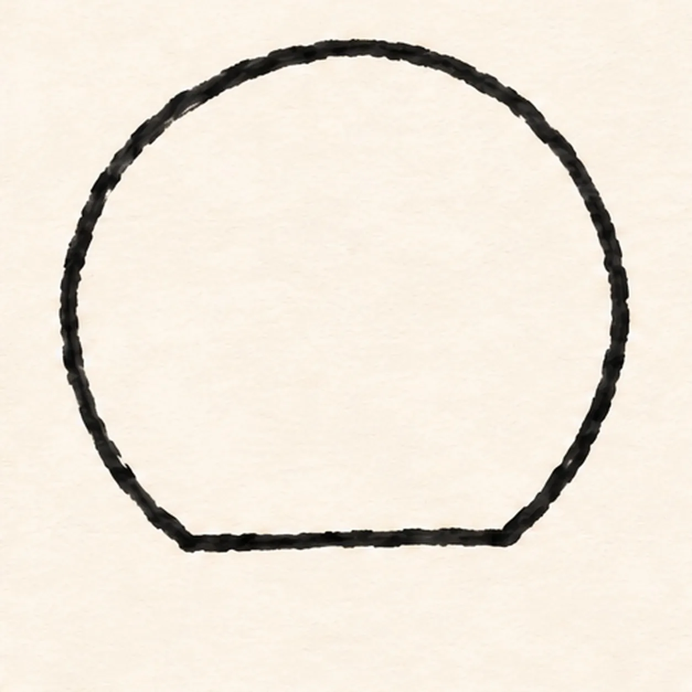
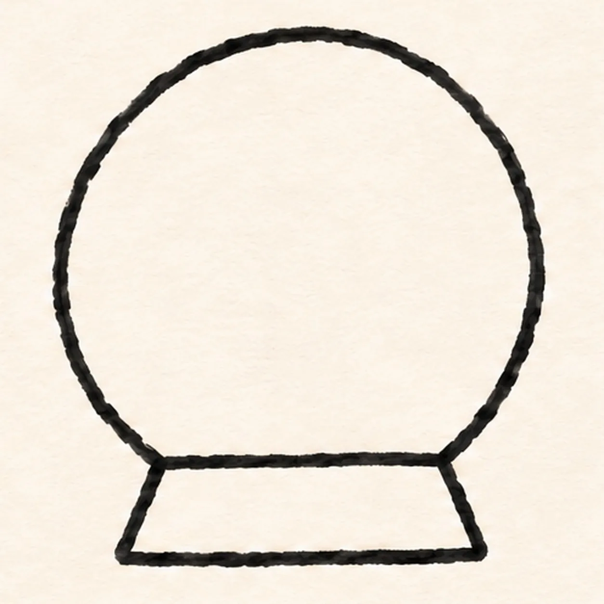
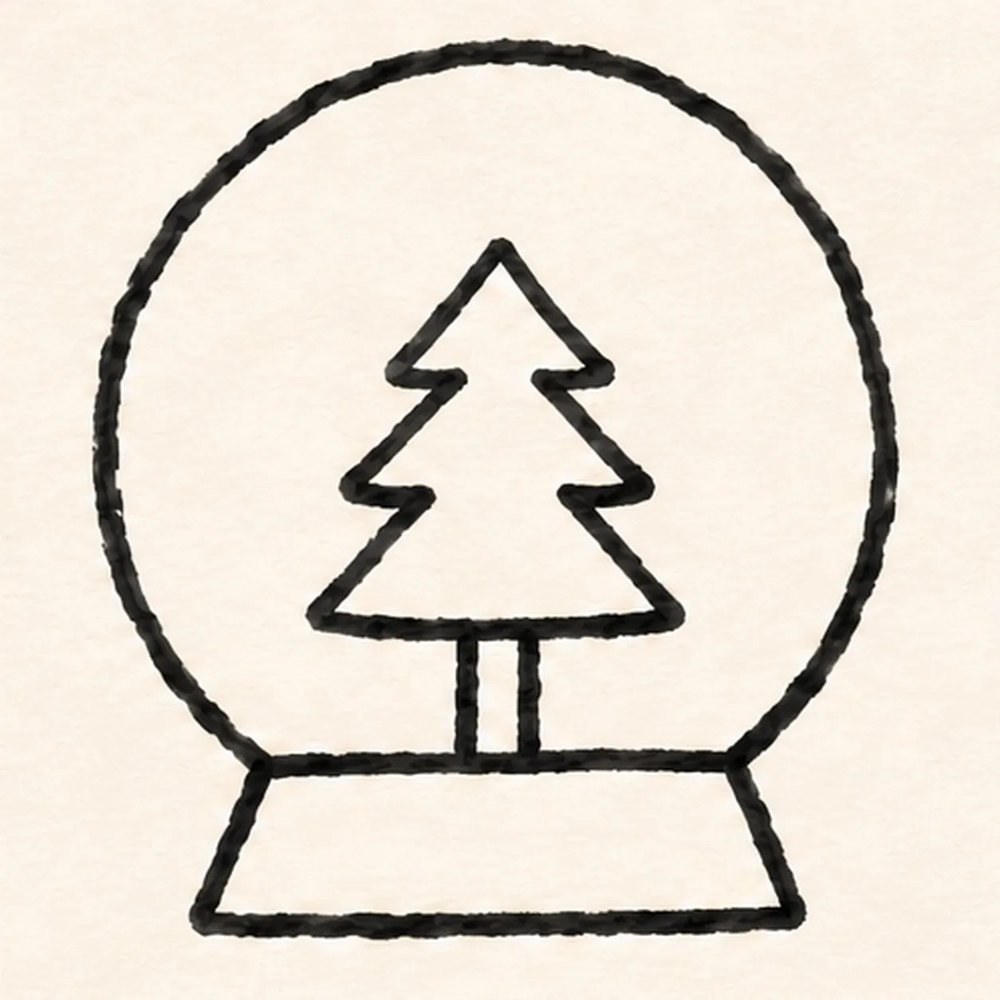
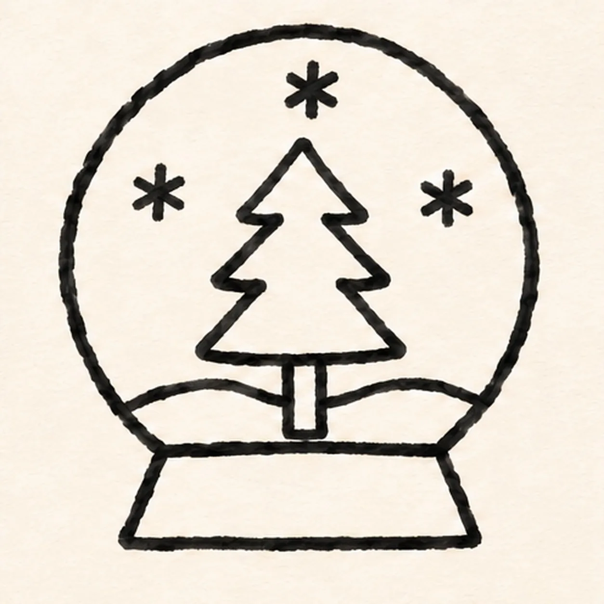
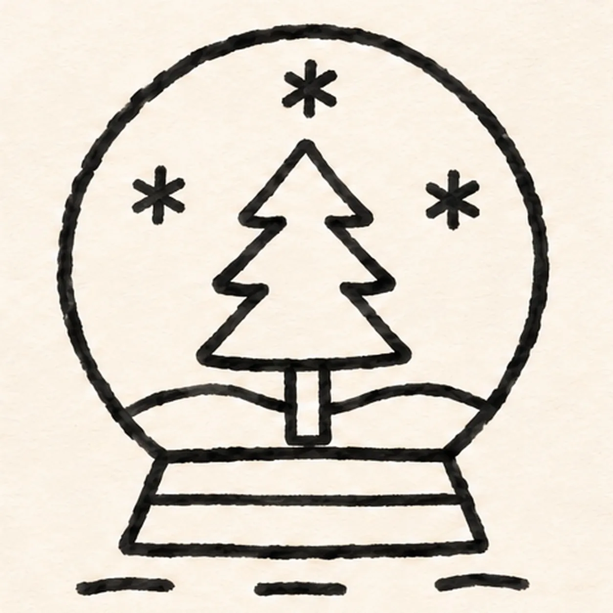

Felt-tip marker mode
Let's draw a snow globe
Treat this as one playful practice round: sketch the idea loosely, simplify the shapes, then commit with confident marker outlines and bright fills.
-
01

Outline the glass globe
With black felt tip, draw one broad near-round curve from the lower-left glass corner up and around to the lower-right corner. Join the two ends with a short straight bottom edge.
Marker tip: Keep the round top generous enough to hold one small tree and three flakes.
-
02

Set the pedestal
From the two ends of the globe's flat bottom, angle outward and down, then join the corners with a wider flat base. Keep the round glass outline in place.
Marker tip: Let the pedestal spread a little wider than the globe bottom so it looks stable.
-
03

Plant a tiny pine
Inside the globe, stack three pointed branch tiers from a small top point to a wider lower tier. Bring a short trunk down toward the glass bottom without touching the pedestal.
Marker tip: Leave open air around all three branch tiers so the tree reads at thumbnail size.
-
04

Float the snow
Curve one shallow snow bank behind the pine trunk. Around the upper branches, place exactly three small asterisk snowflakes, separated so each reads clearly.
Marker tip: Place one flake above the tree and one on each side; keep the bank behind the trunk.
-
05

Stripe the base
Run one thin horizontal stripe inside the pedestal, parallel to its bottom edge. Place three short separated ground strokes just under the base.
Marker tip: The single stripe and three ground strokes are enough detail before color.
-
06

Color the winter globe
Fill the existing pine deep teal, the established pedestal coral, and a pale aqua wash behind the tree. Leave the snow bank white and keep all three black snowflakes clear; reinforce only the existing contours and three ground strokes.
Marker tip: Pull marker strokes with the tree branches and leave small paper streaks in the aqua and coral.